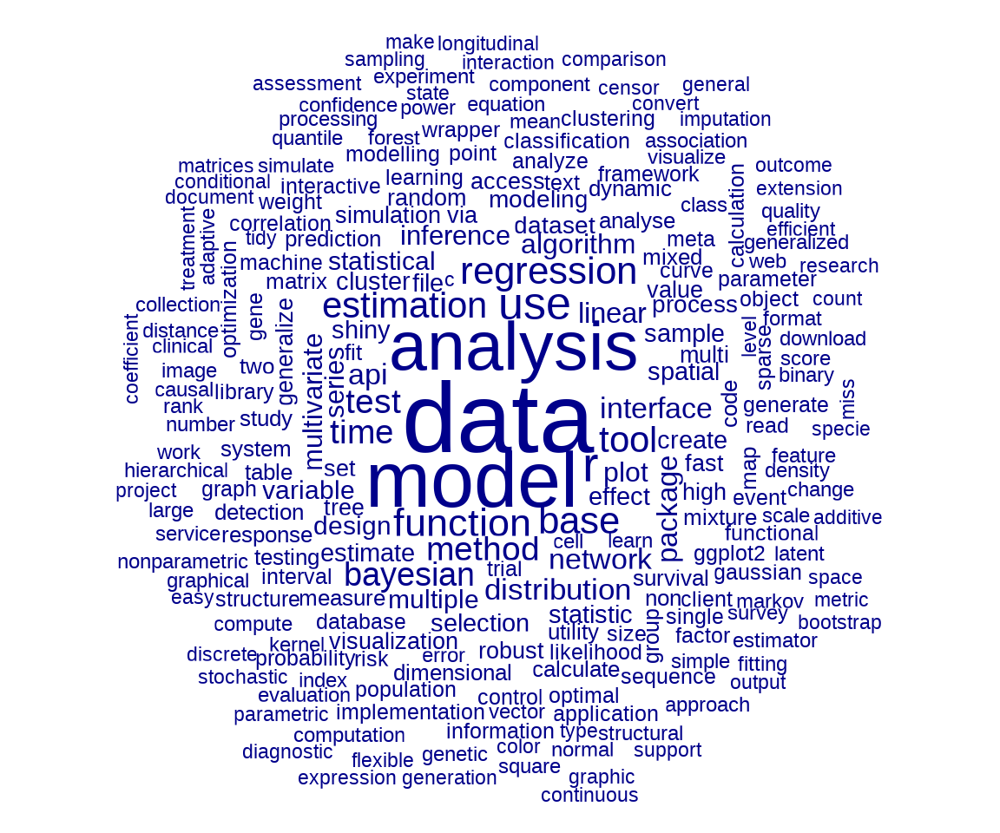
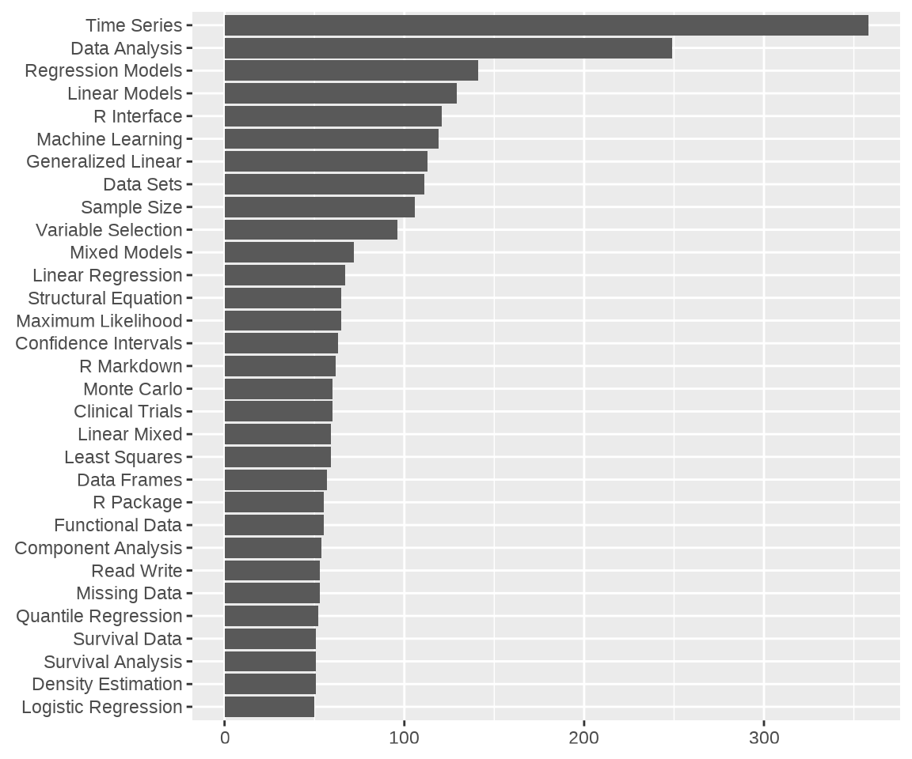
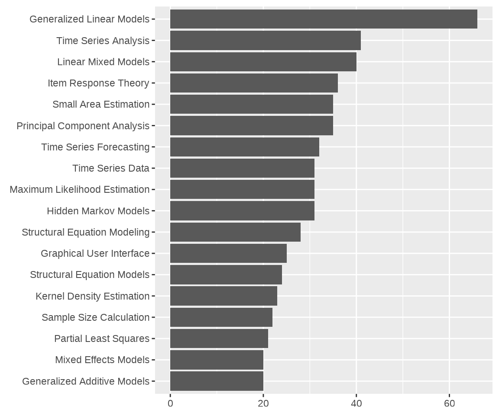

19 文本数据分析
R 语言官网的任务视图中有自然语言处理（Natural Language Processing）视图，它涵盖文本数据分析（Text Analysis）的内容。R 语言社区中有两本文本分析相关的著作，分别是《Text Mining with R》(Silge 和 Robinson 2017)和《Supervised Machine Learning for Text Analysis in R》(Hvitfeldt 和 Silge 2021)。
本文获取 CRAN 上发布的 R 包元数据中的描述字段，利用文本分析工具，实现 R 包主题分类。首先加载后续用到的一些文本分析和建模的 R 包。
接着，调用 tools 包的函数 CRAN_package_db() 获取 R 包元数据，为了方便后续重复使用，保存到本地。
去除重复的记录，保留 Package 和 Title 字段，该数据集共含有 22509 个 R 包的元数据。
#> Package
#> 1 AalenJohansen
#> 2 aamatch
#> 3 AATtools
#> 4 ABACUS
#> 5 abasequence
#> 6 abbreviate
#> Title
#> 1 Conditional Aalen-Johansen Estimation
#> 2 Artless Automatic Multivariate Matching for Observational\nStudies
#> 3 Reliability and Scoring Routines for the Approach-Avoidance Task
#> 4 Apps Based Activities for Communicating and Understanding\nStatistics
#> 5 Coding 'ABA' Patterns for Sequence Data
#> 6 Readable String Abbreviation19.1 数据清理和准备
- 去掉换行符
\n和单引号'等， - 名词和动词还原，如 models / modeling 还原为 model， methods 还原为 method 等等。
#> [1] "method" "model"#> [[1]]
#> [1] "method"
#>
#> [[2]]
#> [1] "model"接下来，要把该数据集整理成文本分析工具可以使用的数据类型 – 制作语料。
19.2 高频词、短语
发现一些高频出现的词语或短语，通过这些高频词，这暗示一些信息。
library(quanteda.textplots)
word1 <- pdb_doc |>
tokens(remove_punct = TRUE, remove_symbols = TRUE) |>
tokens_remove(stopwords("en")) |>
dfm() |>
dfm_trim(min_termfreq = 100, termfreq_type = "count", verbose = FALSE)
# 高频词
colSums(word1) |>
sort(decreasing = T) |>
head(50)#> data analysis models r using
#> 3704 2188 1655 1368 1069
#> model regression estimation functions tools
#> 943 903 819 811 705
#> bayesian interface time methods api
#> 686 534 533 513 510
#> linear based inference multivariate series
#> 467 415 408 401 387
#> statistical package generalized tests multiple
#> 386 369 351 351 345
#> modeling test spatial selection distribution
#> 344 333 333 330 319
#> shiny clustering learning algorithm statistics
#> 317 311 287 283 282
#> network via files random create
#> 282 270 269 260 257
#> robust distributions fast testing datasets
#> 253 252 248 240 235
#> survival method networks plots visualization
#> 234 230 226 221 217
library(quanteda.textstats)
# 2个词 最少出现 40 次
pdb_toks <- tokens(pdb_doc)
word2 <- pdb_toks |>
tokens_remove(stopwords("en")) |>
tokens_select(pattern = "^[A-Z]", valuetype = "regex",
case_insensitive = FALSE, padding = TRUE) |>
textstat_collocations(min_count = 50, size = 2, tolower = FALSE)
word2 |>
subset(select = c("collocation", "count", "lambda", "z")) |>
(\(x) x[order(x$count, decreasing = T), ])()#> collocation count lambda z
#> 1 Time Series 358 9.006926 43.391383
#> 14 Data Analysis 249 2.070662 28.894179
#> 11 Regression Models 140 2.994342 30.178069
#> 10 Linear Models 128 3.271254 30.599106
#> 4 R Interface 119 4.333113 35.731495
#> 9 Machine Learning 119 8.524257 31.005620
#> 15 Data Sets 111 5.107881 26.322358
#> 2 Generalized Linear 109 5.057559 39.275087
#> 5 Sample Size 106 8.888768 35.599219
#> 3 Variable Selection 96 6.092266 38.962974
#> 18 Mixed Models 72 3.650644 24.385088
#> 21 Linear Regression 67 3.112474 22.816644
#> 8 Maximum Likelihood 65 8.013360 32.162154
#> 13 Structural Equation 65 8.910749 29.128523
#> 7 Confidence Intervals 63 8.171412 32.476555
#> 6 Clinical Trials 60 7.053179 33.794375
#> 20 R Markdown 60 5.658139 23.400712
#> 30 Monte Carlo 60 17.055968 8.510408
#> 12 Linear Mixed 59 4.893686 29.276574
#> 22 Least Squares 59 11.040175 22.765498
#> 29 Data Frames 57 7.582947 9.164979
#> 27 Functional Data 55 2.654504 16.204868
#> 24 Component Analysis 54 4.658447 19.821265
#> 25 Missing Data 53 3.172013 17.250679
#> 17 Quantile Regression 52 4.869997 24.550476
#> 23 R Package 52 3.085157 20.003793
#> 16 Density Estimation 51 4.797055 25.635160
#> 26 Survival Analysis 51 2.745405 17.146027
#> 28 Survival Data 51 2.176754 13.652829
#> 19 Logistic Regression 50 5.248696 23.463852# 3 个词 最少出现 20 次
word3 <- pdb_toks |>
tokens_remove(stopwords("en")) |>
tokens_select(pattern = "^[A-Z]", valuetype = "regex",
case_insensitive = FALSE, padding = TRUE) |>
textstat_collocations(min_count = 20, size = 3, tolower = FALSE)
word3 |>
subset(select = c("collocation", "count", "lambda", "z")) |>
(\(x) x[order(x$count, decreasing = T), ])()#> collocation count lambda z
#> 13 Generalized Linear Models 66 -0.2801898 -0.8890003
#> 7 Time Series Analysis 41 0.9843681 0.6530352
#> 14 Linear Mixed Models 40 -0.3689316 -0.9390730
#> 4 Item Response Theory 36 1.7505452 1.0324294
#> 2 Small Area Estimation 35 2.9637731 1.7033663
#> 18 Principal Component Analysis 35 -2.9485013 -4.7122596
#> 9 Time Series Forecasting 32 -0.3895522 -0.1919605
#> 5 Hidden Markov Models 31 0.8167421 0.7919234
#> 8 Time Series Data 31 0.4080359 0.4102911
#> 12 Maximum Likelihood Estimation 31 -0.7001378 -0.7466378
#> 6 Structural Equation Modeling 28 1.5167356 0.7424072
#> 3 Graphical User Interface 25 2.8429215 1.3693191
#> 10 Structural Equation Models 24 -0.2825118 -0.2728355
#> 11 Kernel Density Estimation 23 -0.2280449 -0.2830313
#> 15 Sample Size Calculation 22 -1.8761268 -1.1173717
#> 17 Partial Least Squares 21 -5.0778328 -4.2502769
#> 1 Mixed Effects Models 20 1.9944778 2.9694039
#> 16 Generalized Additive Models 20 -0.8619322 -1.7385127代码


19.3 特征共现网络
# 文档词矩阵
pdb_dfm <- pdb_doc |>
tokens(remove_punct = TRUE, remove_symbols = TRUE) |>
tokens_remove(stopwords("en")) |>
dfm()
# 最高频的特征、主要特征
topfeatures(pdb_dfm)#> data analysis models r using model regression
#> 3704 2188 1655 1368 1069 943 903
#> estimation functions tools
#> 819 811 70519.4 文本主题探索
高维特征（15K）降至低维（10），SVD 分解，取主要的部分（特征值非零的矩阵块）
先用 4000 个 R 包的标题文本
library(text2vec)
tokens = tolower(pdb$Title[1:4000])
# 尚需清理一些无用的停止词
tokens = word_tokenizer(tokens)
it = itoken(tokens, ids = pdb$Package[1:4000], progressbar = FALSE)
v = create_vocabulary(it)
v = prune_vocabulary(v, term_count_min = 10, doc_proportion_max = 0.2)
vectorizer = vocab_vectorizer(v)
dtm = create_dtm(it, vectorizer, type = "dgTMatrix")
lda_model = LDA$new(n_topics = 10, doc_topic_prior = 0.1, topic_word_prior = 0.01)
doc_topic_distr =
lda_model$fit_transform(x = dtm, n_iter = 1000,
convergence_tol = 0.001, n_check_convergence = 25,
progressbar = FALSE)
barplot(doc_topic_distr[1, ], xlab = "topic",
ylab = "proportion", ylim = c(0, 1),
names.arg = 1:ncol(doc_topic_distr))
lda_model$get_top_words(n = 10, topic_number = c(1L, 5L, 10L), lambda = 1)19.5 文本相似性
text2vec 包计算文本相似度
19.6 习题
text2vec 包内置的电影评论数据集
movie_review中 sentiment（表示正面或负面评价）列作为响应变量，构建二分类模型，对用户的一段评论分类。（提示：词向量化后，采用 glmnet 包做交叉验证调整参数、模型）接习题 2，根据任务视图对 R 包的标记，建立有监督的多分类模型，评估模型的分类效果，并对尚未标记的 R 包分类。（提示：一个 R 包可能同时属于多个任务视图，考虑使用 xgboost 包）